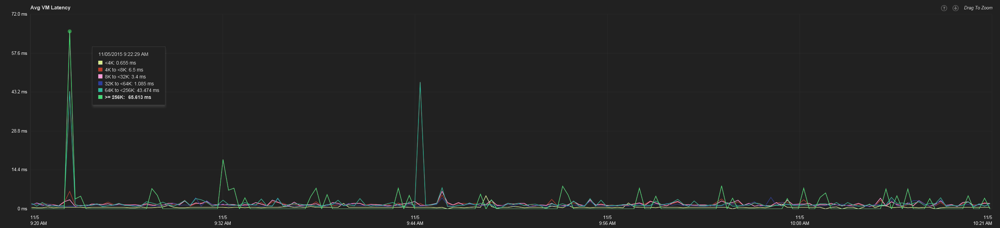
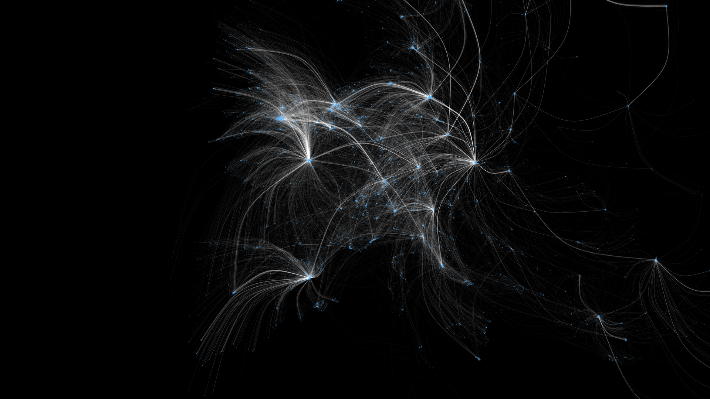

<!DOCTYPE html>
<html lang="en">
  <head>
    <meta charset="utf-8">
    <meta http-equiv="X-UA-Compatible" content="IE=edge">
    <meta name="viewport" content="width=device-width, initial-scale=1">

    <title>dppr bench</title>

    <meta name="description" content="Data Processing and Perception Research (dppr) Workbench">
    <meta name="author" content="@chjdev">

    <link href="css/bootstrap.min.css" rel="stylesheet">
    <link href="css/style.css" rel="stylesheet">

  </head>
  <body>
    <div class="container-fluid">
	<div class="row">
		<div class="col-md-12">
			<nav class="navbar navbar-default navbar-fixed-top" role="navigation">
				<div class="navbar-header">
					 
					<button type="button" class="navbar-toggle" data-toggle="collapse" data-target="#bs-example-navbar-collapse-1">
						 <span class="sr-only">Toggle navigation</span><span class="icon-bar"></span><span class="icon-bar"></span><span class="icon-bar"></span>
					</button> <a class="navbar-brand" href="#" rel="home"></a>
				</div>
				
				<div class="collapse navbar-collapse" id="bs-example-navbar-collapse-1">
					<ul class="nav navbar-nav">
						<li class="dropdown">
							 <a href="#" class="dropdown-toggle" data-toggle="dropdown">European Fickr Graph<strong class="caret"></strong></a>
							<ul class="dropdown-menu">
								<li>
									<a href="#">Twitter Analytics Winter 2015</a>
								</li>
								<li class="active">
									<a href="#">European Flickr Graph</a>
								</li>
								<li>
									<a href="#">Bundespräsidentenwahl 2016</a>
								</li>
<!--								<li class="divider">
								</li>
								<li>
									<a href="#">Separated link</a>
								</li>
-->
							</ul>
						</li>
					</ul>
					<form class="navbar-form navbar-left" role="search">
						<div class="form-group">
							<input type="text" class="form-control" placeholder="File name or content...">
						</div> 
						<button type="submit" class="btn btn-default">
							Search
						</button>
					</form>
					<ul class="nav navbar-nav navbar-right">
						<li>
							<a href="#">Billing</a>
						</li>
						<li class="dropdown">
							 <a href="#" class="dropdown-toggle" data-toggle="dropdown">Settings<strong class="caret"></strong></a>
							<ul class="dropdown-menu">
								<li>
									<a href="#">User Profile</a>
								</li>
								<li>
									<a href="#">Theme</a>
								</li>
							</ul>
						</li>
					</ul>
				</div>
				
			</nav>
		</div>
	</div>
	<div class="row">
		<div class="col-md-3">
			<div class="panel-group" id="panel-toolbox">
				<div class="panel panel-default">
					<div class="panel-heading">
						 <a class="panel-title" data-toggle="collapse" href="#panel-element-sources">Sources<strong class="caret"></strong></a>
					</div>
					<div id="panel-element-sources" class="panel-collapse collapse in">
						<div class="panel-body">
                            <div class="list-group">
                                <button type="button" class="list-group-item ellipsis-button active">Twitter &gt; @redbull, @cocacola, #wings, /softdrinks</button>
                                <button type="button" class="list-group-item ellipsis-button">Facebook &gt; /redbull, /cocacola</button>
                                <button type="button" class="list-group-item ellipsis-button">Reddit &gt; #redbull, #cocacola</button>
                            </div>
                        </div>
					</div>
				</div>
				<div class="panel panel-default">
					<div class="panel-heading">
						 <a class="panel-title" data-toggle="collapse" href="#panel-element-transformers">Transformers<strong class="caret"></strong></a>
					</div>
					<div id="panel-element-transformers" class="panel-collapse collapse in">
						<div class="panel-body">
                            <div class="list-group">
                                <button type="button" class="list-group-item ellipsis-button active">Language Detector</button>
                                <button type="button" class="list-group-item ellipsis-button">Sentiment Detector</button>
                                <button type="button" class="list-group-item ellipsis-button">Geotagger</button>
                                <button type="button" class="list-group-item ellipsis-button">Link Unroller</button>
                            </div>
						</div>
					</div>
				</div>
				<div class="panel panel-default">
					<div class="panel-heading">
						 <a class="panel-title collapsed" data-toggle="collapse" href="#panel-element-queries">Queries<strong class="caret"></strong></a>
					</div>
					<div id="panel-element-queries" class="panel-collapse collapse">
						<div class="panel-body">
                            <div class="list-group">
                                <button type="button" class="list-group-item ellipsis-button">Influence Network</button>
                                <button type="button" class="list-group-item ellipsis-button">Top 100 Influencers</button>
                                <button type="button" class="list-group-item ellipsis-button">30 Day Volume</button>
                                <button type="button" class="list-group-item ellipsis-button">30 Day Top Links</button>
                            </div>
						</div>
					</div>
				</div>
				<div class="panel panel-default">
					<div class="panel-heading">
						 <a class="panel-title" data-toggle="collapse" href="#panel-element-viz">Visualizations<strong class="caret"></strong></a>
					</div>
					<div id="panel-element-viz" class="panel-collapse collapse in">
						<div class="panel-body">
                            <div class="list-group">
                                <button type="button" class="list-group-item ellipsis-button active">Influencer Network</button>
                                <button type="button" class="list-group-item ellipsis-button">Sentiment Streamgraph</button>
                                <button type="button" class="list-group-item ellipsis-button">Clique Network</button>
                                <button type="button" class="list-group-item ellipsis-button">Volume Chart</button>
                            </div>
						</div>
					</div>
				</div>
				<div class="panel panel-default">
					<div class="panel-heading">
						 <a class="panel-title collapsed" data-toggle="collapse" href="#panel-element-targets">Targets<strong class="caret"></strong></a>
					</div>
					<div id="panel-element-targets" class="panel-collapse collapse">
						<div class="panel-body">
                            <div class="list-group">
                                <button type="button" class="list-group-item ellipsis-button">ElasticSearch @ 124.53.22.128:9200</button>
                                <button type="button" class="list-group-item ellipsis-button">Redis @ 124.53.22.128:5454</button>
                                <button type="button" class="list-group-item ellipsis-button">MongoDB @ 124.53.22.128:3223</button>
                            </div>
						</div>
					</div>
				</div>
			</div>
		</div>
		<div class="col-md-9">
			<div class="tabbable" id="tabs-967149">
				<ul class="nav nav-tabs">
					<li class="active">
						<a href="#panel-1" data-toggle="tab">Twitter &gt; @redbull, @cocacola, #wings, /softdrinks</a>
					</li>
					<li>
						<a href="#panel-2" data-toggle="tab">Language Detector</a>
					</li>
					<li>
						<a href="#panel-3" data-toggle="tab">Influencer Network</a>
					</li>
				</ul>
				<div class="tab-content">
					<div class="tab-pane active" id="panel-1">
<pre class="prettyprint lang-scala">
val tweetStream = TwitterUtils.createStream(ssc, Utils.getAuth)
  .map(gson.toJson(_))

tweetStream.foreachRDD((rdd, time) => {
  val count = rdd.count()
  if (count > 0) {
    val outputRDD = rdd.repartition(partitionsEachInterval)
    outputRDD.saveAsTextFile(
      outputDirectory + "/tweets_" + time.milliseconds.toString)
    numTweetsCollected += count
    if (numTweetsCollected > numTweetsToCollect) {
      System.exit(0)
    }
  }
})
</pre>
<div class="horizontal-slide">
    
</div>
					</div>
					<div class="tab-pane" id="panel-2">
<pre class="prettyprint lang-py">
# Copyright 2011 Marco Lui <saffsd@gmail.com>. All rights reserved.
import  ...

to_clean = re.compile(_twokenize.regex_or(
  _twokenize.Hearts,
  _twokenize.url,
  _twokenize.Email,
  _twokenize.emoticon,
  _twokenize.Arrows,
  _twokenize.entity,
  _twokenize.decorations,
  _twokenize.Hashtag,
  _twokenize.AtMention,
).decode('utf8'), re.UNICODE)


def clean_tweet(text):
  return to_clean.sub('', text)


def squeeze_whitespace(text):
  return re.sub('\s+', ' ', text)


if __name__ == "__main__":
  parser = optparse.OptionParser()
  parser.add_option('-l', '--langs', dest='langs', help='comma-separated set of target ISO639 language codes (e.g en,de)')
  opts, args = parser.parse_args()

  lang_set = set(opts.langs.split(",")) if opts.langs else None

  try:
    for line in sys.stdin:
      j = json.loads(line)
      if j.get('retweet_count') == 0:
        text = j.get('text')
        if text:
          lang, conf = langid.classify(clean_tweet(text))
          if lang_set is None or lang in lang_set:
            print "{0}: {1}".format(lang, squeeze_whitespace(text).encode('utf8'))
  except (IOError, KeyboardInterrupt):
    # Terminate on broken pipe or ^C
    pass
</pre>
					</div>
					<div class="tab-pane" id="panel-3">
<pre class="prettyprint lang-js">
var config = { width: 4096
             , height: 4096
             , aspect: this.width/this.height
             };
var projection = d3.geo.azimuthalEquidistant().scale(2048*30).translate([config.width/2,config.height/2]).center([16.37, 48.20]);

function parse_id(d) {
    var lon = +((d / 100000) / 100).toFixed(2) - 180;
    var lat = +((d % 100000) / 100).toFixed(2) - 180;
    return [lon, lat];
}

var graph = {"vertices":[], "edges":[]};
d3.json("output_acyclic_vienna.json", function(error, json_graph) {
        var processingInstance = Processing.getInstanceById('bloomnet');
        graph = json_graph;
        processingInstance.redraw();
});
</pre>

					</div>
				</div>
			</div>
		</div>
	</div>
</div>

    <script src="js/jquery.min.js"></script>
    <script src="js/bootstrap.min.js"></script>
    <script src="js/scripts.js"></script>
    <script src="https://cdn.rawgit.com/google/code-prettify/master/loader/run_prettify.js?lang=scala&lang=js&lang=py&skin=desert"></script>
  </body>
</html>
